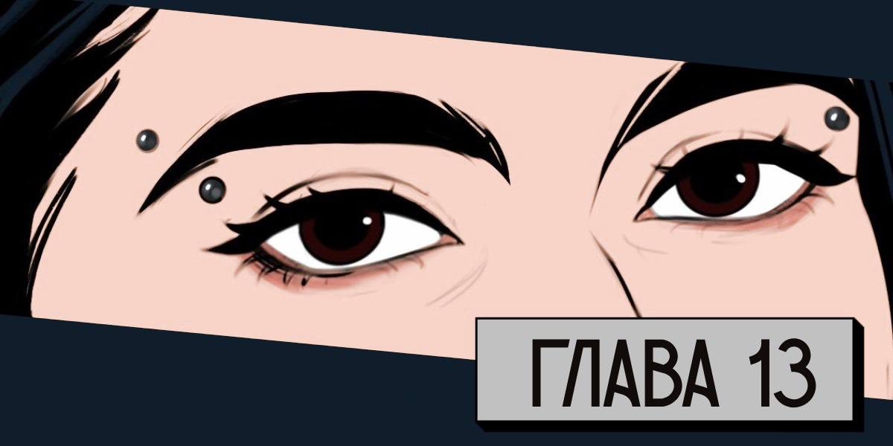
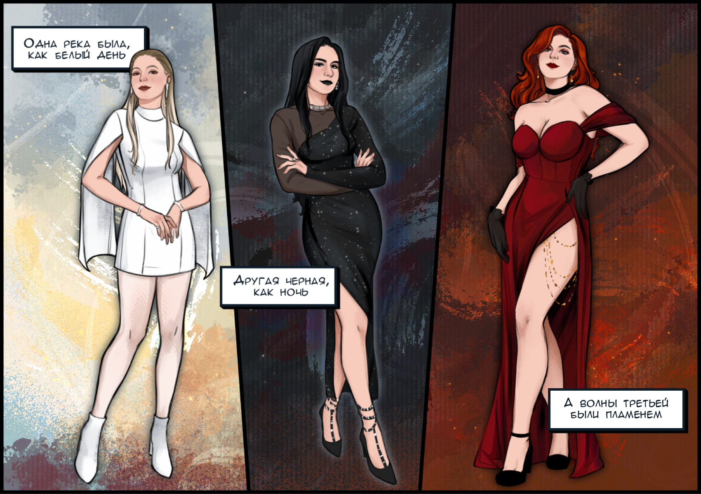
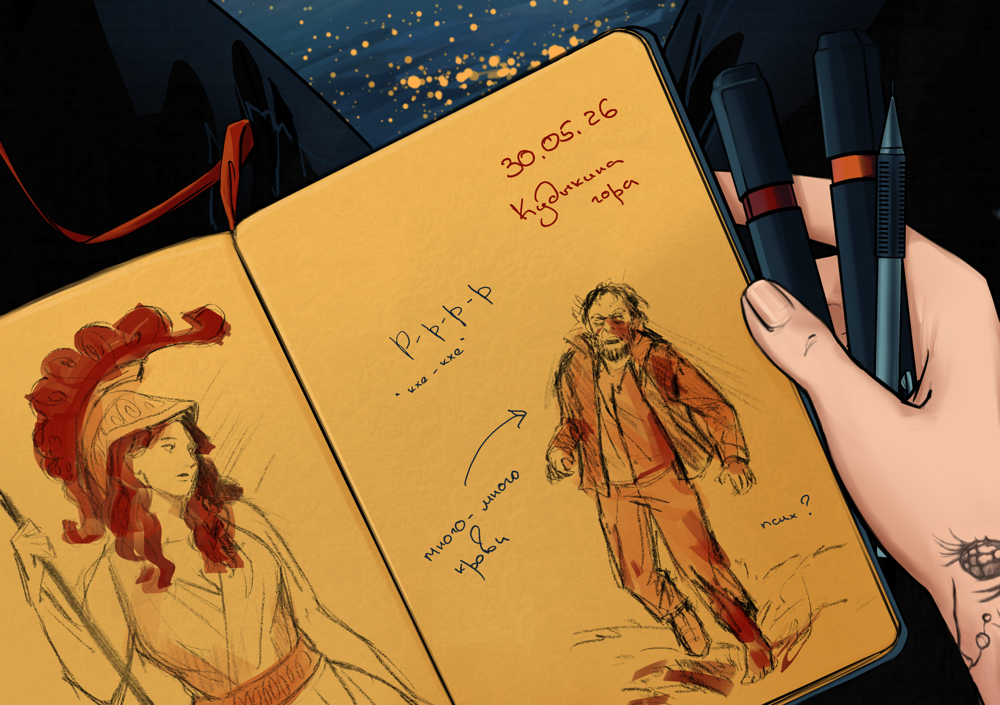

Холодный разум, говорят, — залог идеальной памяти. Я бы поспорила. Мой разум — это кладбище, где похоронены все детали. Но вот мой блокнот хранит в себе все. Именно он и поможет мне вспомнить, как жаркий май 2026 навсегда изменил наши жизни.
30.05.2026
Я тут подумала: а почему бы нам, девицами, не рвануть куда-нибудь? Ну да, мы никогда раньше не ездили вместе. Но ведь воспоминания нужно создавать самим, а не ждать, когда они появятся случайно. Так что я решила: едем на Кудыкину гору — всегда хотела там побывать, все быстро оплатила, чтобы у девиц не было возможности соскочить.
Кудыкина гора. Звучит почти мистически, но на деле это всего лишь парк под Липецком, где по расписанию рычит Горыныч. Красота природы здесь кажется почти издевательством на фоне навязчивых развлечений. И люди. Их так много, что если бы апокалипсис наступил, его бы не сразу и заметили. Вечная давка, крики детей, пронзающие воздух — чем не предвестник конца, замаскированный под воскресный досуг?
Но, конечно, мы тут не ради толпы и сафари-парка. Мы тут ради воспоминаний.
А мы — это Тора, Оля и я. Три девицы. Запасной состав ВИА Гры, как я нас называю. За Меладзе у нас, очевидно, тот самый Горыныч.

Точно не вспомню, над чем мы смеемся, но мне практически уже сложно дышать от смеха. Скорее всего, что-то чернушное шутканула Оля. А мы втроем далеко не застенчивые юные нимфы, поэтому неудивительно, что кое-кто на дорожке на нас оглядывается и даже закатывает глаза.
— Это парк культуры и отдыха, не мешайте дамам отдыхать! — "своими кислыми лицами" хочу добавить я, но не в этот раз. А то эти уникумы еще охране пожаловаться на нас додумаются.
— Пошли ближе к лесу? — явно подумав о том же, говорит Тора.
— А пошли, там общество комаров и то поприятнее будет.
И знаете, я даже не слукавила. Я действительно так считаю.
Май выдался очень жарким, ни о какой вечерней прохладе речи даже не шло. Кажется, после майских температура ни разу не опускалась ниже 27. До леса ведет всего одна дорожка, благо людей было все меньше и меньше. Очевидно, общество комаров прельщает только нас. Я особо не слушаю, о чем говорят девицы, потому что мысли мои крутятся вокруг десерта, который я себе так и не заказала.
Внезапно Оля меня толкает локтем и первая реакция, конечно, – высказать ей все, что по этому поводу думают мои мягонькие и нежные бока. Завтра 100% будет огромный синяк. Я уже открываю рот для тирады, а потом вижу то же, что и Оля.
Со стороны леса к нам бежитОн.
Можно подумать, что это типичный провинциальный алкаш, но слишком резв он для запойного.
Он бежит и издает странные звуки.
"Диагноз не скажу, но псих точно" — яркой лампочкой мысль возникает у меня в голове.
— Иди нахер! Подойдешь ближе, я ебну! — что-что, а подростковый опыт драк просто так не проходит.
Но мужику явно плевать на мои угрозы. Он спотыкается, но потом встает и продолжает надвигаться на нас.
Инстинктивно я задвигаю Тору за спину. Потом делаю еще шаг и встаю перед Олей. Без понятия, умеют ли девочки драться, но я себя в обиду не дам точно. И почему такие важные вещи никогда не обсуждают? Эй, подруга, а драться ты умеешь? С ноги по яйцам давала хоть раз? А за волосы оттаскать силенок хватит?
Все жизненно важные вопросы спрошу потом, а сейчас надо найти палку. Блин, почему в этих парках так хорошо убирают! Где эта русская безалаберность, когда она так нужна? Вот бы сюда сейчас мои ножи. Хотя потом хрен докажешь, что была самооборона, знаем мы такие истории. Придется самой. По старинке.
Я делаю шаг вперед и встаю в боевую стойку, как учили на тренировках. Представляю, что в руке нож. Даю слово, что теперь буду его брать во все поездки. Еще раз быстро смотрю по сторонам — может, хоть камень какой?
С другого конца дорожки к нам бежит Второй.
Да еб твою мать!
Двое взрослых мужиков и я? Шансов мало. Будем откровенны, их нет.
Зато я дам немного форы девчонкам и они успеют убежать.
Так, стоп. Они до сих пор стоят тут?!
Да еб твою мать! Снова!
Поворачиваю голову, чтобы накричать и краем глаза вижу, что Второй сбивает с ног Первого. Сложно сказать, кто был больше рад этому столкновению: мы, странный бомж или наш рыцарь. Хотя ответ нашелся достаточно быстро: у рыцаря была свита.
— Вован, ты чё там?
— Да бомжара девчонок напугал.
Судя по голосам, рыцарь и его свита до этого праздновали чуть ли не убийство дракона. Хотя, возможно, своего дракона они только что нашли.
— Не перевелись на Руси еще богатыри, — с этими словами я разворачиваюсь к девицам.
— Съебываем, — озвучивает общее желание Тора.
— Только не бегом, — почти хором отвечаем мы с Олей.
Знаете, от зомби бегать тренировалась только Тора, у нас с Олей были другие хобби.
— И что это было? — чуть позже у домика приходит в себя Оля.
— Один странный мужик спас нас от другого странного мужика, – отвечаю я.
— А вдруг он ему навредит?
— Кто именно кому? Один бухой, второй псих — чего ты за них переживаешь? Тем более наш защитник там был с друзьями, человек 6 точно.
— А если они покалечат первого?
— Тогда мы ничего не видели и ничего не знаем, – говорю я твердо.
— А …— хочет еще возразить Оля.
— Мы можем рассказать охране, — вмешивается Тора.
— Хорошо, только давайте при выезде? Остаток вечера портить не хочется. Не смотрите на меня так, у меня активность гражданской позиции ниже среднего. Но мне стыдно. Очень.
— Ладно, давайте утром, — соглашается Оля. Возможно, она быстро сдалась, потому что уже темнело, а уходить от домиков было не лучшей идеей после всего произошедшего.
— Ну и какая у нас версия? — спрашивает Тора, заходя в дом.
— Мы видели издалека, поэтому подробностей не знаем? — еще со студенческих времен помню простую истину "чем больше подозреваемый рассказывает подробностей, тем больше вероятность его на чем-то поймать". — Кстати, это почти правда, я мало что рассмотрела.
— Ты не видела, что он был без ботинка на одной ноге? — спрашивает Оля.
— Эм, нет. Мои мысли были заняты тем, как вас спасти. Кстати, почему вы, блин, не убежали?
— И бросили тебя? Ты чего!
— Понятно, инстинкт самосохранения на троечку. Так что там с ботинком? — параллельно я протягиваю девицам сыр и овощи для ужина, а сама достаю вино из холодильника. Оле безалкогольное, Торе — красное, а вот эти запасы белого все мои. Нужно все подготовить и можно перемещаться на веранду.
— Ну, его не было…
— Он был в носке или нет? Ботинок волочился или его совсем не было? А не было с самого начала или он потерял его на ходу?
— Настя, оставь эти следовательские штуки! Итак не по себе.
— А именно об этом тебя и будут завтра и все последующие дни спрашивать, я тебя просто готовлю морально. Даже лампой при этом в лицо не свечу, заметь.
Люблю, когда Оля на меня так смотрит, есть в этом что-то из разряда "Я тебя, конечно, люблю, но засунь-ка ты свой вопрос себе знаешь куда?"
— Поэтому, девицы, повторяю еще раз: мы были далеко и ничего не видели. В какой одежде он был? В темной. Высокий или низкий? Да средний. Что кричал? Да кто ж его разберет с такого расстояния!
— Ладно, мы поняли. К охране, значит не пойдем утром?
— А это как Тора решит, ее же идея была, — я, конечно, была против, но сдерживаю себя: в команде нет буквы "я", так ведь?
— Я решаю, что нам нужно выпить и отдохнуть, — отзывается Тора и протягивает нам нарезанный сыр.
— Поддерживаю — подхватываю я и протягиваю девицам наполненные бокалы, с которыми мы перемещаемся на веранду перед домиком.
— Оля, не переживай ты так, посмотри, какая ночь, — Тора пытается отвлечь Олю, которая чувствует себя неуютно на улице.
— О, знаю! Я вчера тест один проходила, специально ссылку сохранила для вас. Давайте, будет прикольно, как в школе.
— Что за тест? — Оля первая поддерживает мою идею.
— "Какая вы богиня". Я знаю, звучит глупо, но он основан на юнгианской психологии и неплохо так помогает разобраться со своим архетипом.
— А архетипы нам нужны для…? — смотрит на меня Тора.
— Для того, чтобы узнать друг друга получше. А то все, что сейчас приходит мне в голову, что ты, — показываю я на Олю. — инженер, у тебя дома живет лучшая собака на свете и ты предпочитаешь пить космополитен. А ты, — перевожу взгляд на Тору, — все свободное время посвящаешь тренировкам и любому коктейлю предпочтешь свои настойки.
— А ты?
— А я уже прошла тест, так что не переводите тему.
Видимо, это звучало слишком по-командному, потому что девицы действительно открыли тест и погрузились в него. А я смотрела как наши соседи жарят шашлыки: шумные, хмельные и очень веселые. На фоне них мы были как кружок старых дев. Забавно. Нам чуть за тридцать, а я уже не готова так горланить на всю округу. Может, это возраст, а может, просто усталость от постоянной гонки.
Мой бокал опустел. Как обычно, у самой первой. Не хотелось нарушать эту атмосферу, но и без вина продолжать было как-то не то. Вздохнув, я встала и направилась к дому, чтобы налить себе еще. Возьму заодно свой блокнот: пока девицы проходят тест, я дорисую начатый рисунок.
Тишина внутри была почти оглушительной после уличного гама. В холодильнике ждала бутылка, холодная и обещающая. Пока наливала, поймала свое отражение в стекле окна — и совсем не старая дева: ярко-рыжие волосы легким хаосом спадают на плечи, татуировки покрывают руки, надпись на футболке говорит, что в этой девице живет панк. Живет и не особо скрывается. Ну грех не подмигнуть такой, да? Что я тут же и делаю.
Выхожу на веранду, Тора уже закончила тест и тоже разглядывает наших соседей.
— Кто у тебя? — спрашиваю ее я.
— А у тебя? — возвращает она мой же вопрос. Ага, чую проснувшийся дух соперничества.
— Давай тогда Олю подождем, чтобы все честно?
— Не стоит меня ждать, я все, — улыбается Оля. Люблю, когда она улыбается: это бывает редко, но всегда очень искренне.
— Насчет три? — говорит Тора. — Раз, два, три.
— Афина. Артемида. Гестия, — говорим мы хором так, что почти не разобрать у кого кто.
— Подождите, — смеюсь я, — мы что, все девственные богини? Нравится такое.
— Типа мы невинные что ли? — спрашивает Тора.
— Девственные богини — это такие независимые, самодостаточные богини, которые не подчиняются никакому "главному" мужчине‑богу. По сути, это образы женщин, которые живут по своим правилам, сами решают, что им делать, и не строят всю жизнь вокруг отношений или семьи. Нам ведь подходит, да? Осталось понять, в чем наша разница.
Мне правда было интересно. Архетипы — это мощный инструмент, который позволяет изучить другого человека и понять его. А я люблю изучать людей. Вот вам первый парадокс: людей я не люблю, но изучать их — это пожалуйста.
Вероятно, поэтому мне досталась Афина.
— Приятно познакомится, — поднимаю я свой бокал и зачитываю девицам результат. —Афина— это про ум, стратегию и здравый смысл. Это женщина, которая полагается на голову, а не на эмоции: она все анализирует, умеет планировать, разбираться в сложных вещах и хочет, чтобы ее ценили за компетентность и адекватность. Она не боится мужчин, спокойно заходит на их территорию и чувствует себя там уверенно. В чувствах она скорее сдержанная, не из тех, кто растворяется в отношениях: ей важно партнерство на равных, уважение к ее границам и уму, а не только к внешности или "женской мягкости".
— Тебе-то и не важна твоя внешность? — весело возражает Оля.
— Важна. Видимо поэтому у меня на втором месте по баллам Афродита… Но мне как бы все равно, что думают о моей внешности, главное, что она нравится мне самой. Да и все равно Афина лидирует. Ну и все остальное в точку, — открываю блокнот и смотрю на рисунок, который начала еще дома — мой автопортрет в образе Афины. — А что у вас?
— У меняАртемида,— теперь очередь Торы поднимать бокал. — Она про свободу и "не трогайте меня, я сама знаю, как мне жить". Это женщина, которой важно свое пространство и свои цели, она слушает интуицию и тело, а не социальные "надо". Она не про удобность, а про внутренний стержень: может постоять за себя и за тех, кого любит. В отношениях ей важно чувствовать себя свободной и живой, поэтому она выбирает тех, кто не ограничивает ее мир.
— Так вот почему ты вечно куда-то бежишь, — говорю я, — не нравится чувствовать себя запертой в клетке? — Это было не просто смело, это было пиздец как смело. Потому что Тора была вспыльчивой, не зря в слабых сторонах у Артемиды значилась ярость. Тора смотрит на меня с вызовом, готовая парировать атаку.
—Гестия— это про внутренний дом и спокойствие, — Оля, как обычно, сглаживает наше противостояние с Торой. — Это женщина, которая не гонится за внешним успехом или драмой, а ценит ощущение уюта, тепла и простых тихих радостей, с ней рядом сразу становится как‑то спокойно. У нее сильная внутренняя опора: она не лезет в центры внимания, но создает вокруг себя атмосферу принятия и мягкого присутствия. С ней можно просто посидеть молча на кухне с чаем — и уже легче дышать.
— Или с вином, — тут же улыбаюсь я Оле, — вот почему обычно мы собираемся на квартиники именно на твоей кухне. Знаете, что подумала? Три такие прекрасные девы-богини точно справились бы с одним неадекватным психом. За нас? — поднимаю я бокал.
— За нас! — отзываются девицы.
— Кстати, если бы у меня действительно были силы Афины, я бы придумала что-то получше, чем в панике искать камень или палку. Может, какой-нибудь лабиринт, — говорю я.
— Тогда я окружу этот лабиринт стеной огня, чтобы он точно не выбрался, — машет руками Оля, изображая огонь.
— А я, — подхватывает Тора, — с силой Артемиды просто метко бы его выстрелила в самое уязвимое место, чтобы он больше не смел нас тревожить.
— Интересно, а какое место у него самое уязвимое? — сквозь смех спрашивает Оля.
— Вы же сказали, что он был без ботинка, да? Ну тогда пяточка.
Мы начинаем громко смеяться. Так громко и настолько заразительно, что даже соседи на веранде повернулись в нашу сторону. Ну и кто тут теперь старые девы, а?
— Ладно, а если серьезно, что еще вы помните? — открываю я блокнот, чтобы сделать быструю зарисовку: мало ли, вдруг может пригодиться.
— У него не было ботинка на левой ноге и она была в крови, — говорит Оля.
— Еще он издавал странные и жуткие звуки, — присоединяется к обсуждению Тора.
— Ну звуки я точно не зарисую.
— Ты же умеешь! Мы знаем, даже если ты нам не показываешь свой блокнот.
— Может я тут похабные комиксы рисую, поэтому и не показываю.
— Настолько? Я же говорила, что ей следует вибратор на день рождения подарить, — переглянусь девицы.
— Вернемся к бомжу-психу! Что там у него еще было? Или не было…
— Ну одет он явно по погоде, — продолжает Тора.
— Кровь на лице и одежде еще помню. И бежал он как-то странно.
— Тут согласна! — отзываюсь я. Причем странно, это мягко сказано. Он явно хромал на левую ногу, но не обращал на это никакого внимания. Теперь я знала про ботинок, но было ощущение, что его это совсем не беспокоило. Как будто мы были важнее его собственной ноги. Странно, одним словом.
Еще он кашлял. Не сильно, но когда он упал, то именно кашель его задержал секунда на 10. 10 секунд — это же так мало, да? Но когда на тебя несется незнакомец, то 10 секунд — это возможность осмотреться и найти подручное оружие, 10 секунд — это три раза громко крикнуть "Помогите", 10 секунд — это время понять, что ты не готова сдаваться. Так что это совсем не мало.
Да, разворот получился странным: величественная Афина и драный бомж. Но это была лишь первая из многих странных вещей, которые ждали нас впереди.
